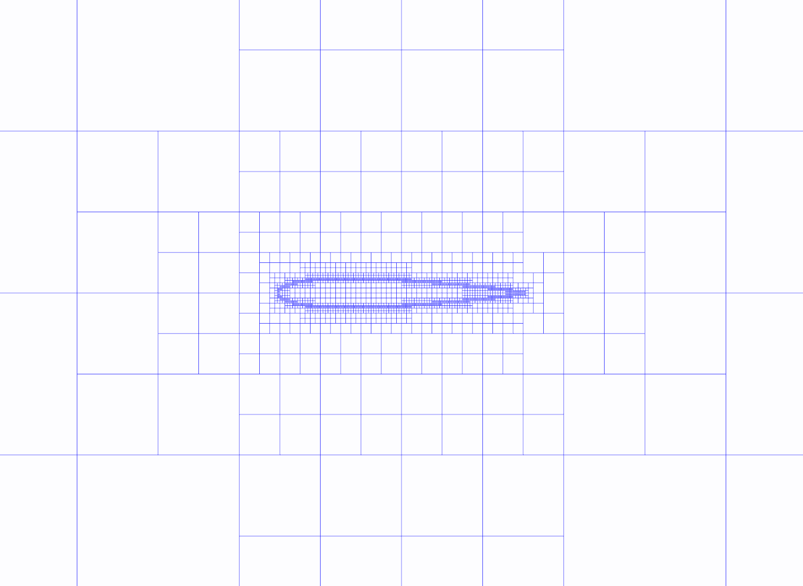
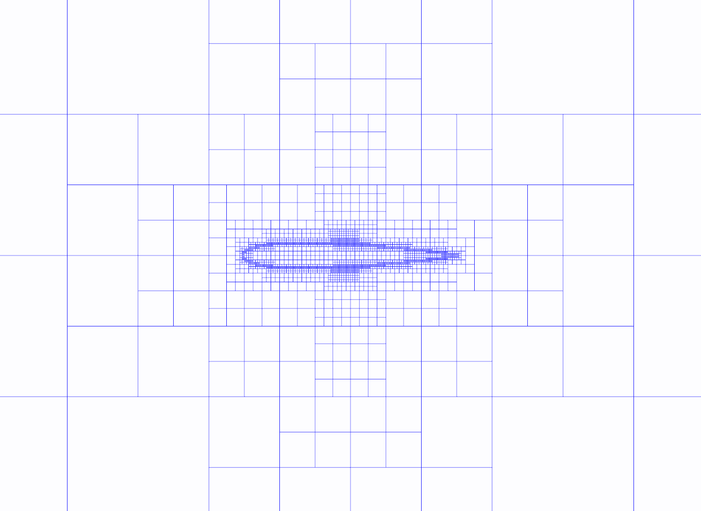

This tutorial demonstrates how to generate an unstructured octree mesh
and adapt it according to a sensor defined on the octree.
|
 Generated Octree mesh. |
 Adapted Octree mesh. |
Octree mesh generation is performed with the G.octree function, given a NACA profile.
Then we define a model sensor field, defined here at vertices.
In practical applications, this field is often issued from
a previous computation.
This sensor field is first transformed to an indicator field, using
the function P.computeIndicatorField. This field is an integer field indicating if a cell
must be refined, maintained or coarsen. You must provide to this
function the approximative number of points you wish for the
adapted octree (nbTargetPts).
Then, the function G.adaptOctree creates the new octree.
Finally, solution on the adapted octree can be obtained by interpolation
using P.extractMesh.